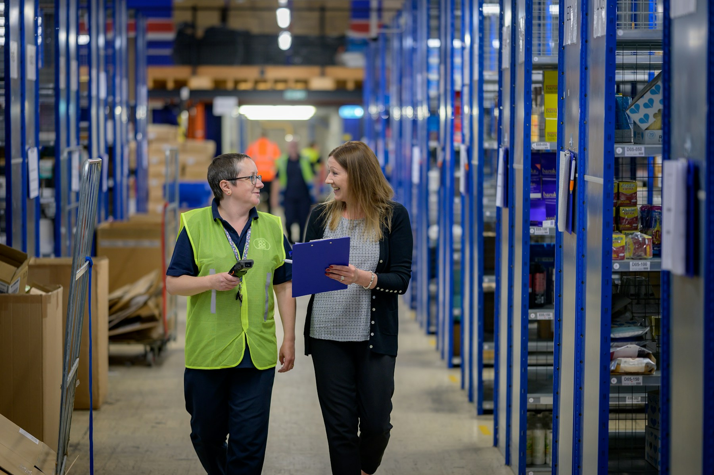

Empresas e indústrias
Proteção patrimonial, continuidade do negócio e gestão dos riscos da sua operação.
Consultoria especializada
Há mais de quatro décadas, a Originalli protege patrimônios, empresas, operações e famílias com análise técnica e atendimento próximo.
Para você · Em todo o Brasil
Escolha o produto e solicite o cálculo à nossa equipe. Atendimento pelo WhatsApp, com análise das alternativas e orientação para contratar.
O que protegemos
Pessoas, patrimônios e operações têm necessidades diferentes. Conheça as soluções e encontre o atendimento adequado ao seu momento.

Proteção patrimonial, continuidade do negócio e gestão dos riscos da sua operação.
Seguros para cargas, embarcadores, transportadores e veículos da empresa.
Proteção para o veículo, ocupantes e terceiros, com orientação na escolha das coberturas.
Cuidado com o imóvel, seus bens e as responsabilidades de moradores e condomínios.
Proteção financeira para quem você ama e para os planos que deseja preservar.
Soluções de responsabilidade civil para empresas, gestores e profissionais.
Mais que seguros
A Originalli é uma consultoria especializada em seguros e gestão de riscos para pessoas, famílias e empresas.
Nosso trabalho reúne diagnóstico, estruturação de coberturas, gestão da carteira e apoio nos momentos que realmente importam. Com sede própria em Londrina e atuação nacional, construímos relações duradouras baseadas em confiança, transparência e responsabilidade.
Gestão Originalli
Nossa experiência em grandes programas de risco se transforma em processo, informação confiável e acompanhamento para cada cliente.
Locais, veículos, ativos, fotos, documentos e histórico organizados para consulta e atualização.
Valores em risco, exposições, sistemas de proteção e critérios técnicos para subscrição.
Coberturas, franquias, limites, endossos, pendências e renovações com rastreabilidade.
Orientação desde o aviso e a vistoria até a documentação, reanálise e conclusão.
Originalli Digital
Com login e senha, clientes e gestores consultam as informações essenciais da carteira pelo celular ou computador, sempre com o apoio da equipe Originalli.
Área do cliente
Telemedicina e assistências para ampliar o cuidado, facilitar o acesso e apoiar pessoas e famílias no dia a dia.
Cuidado acessível
Assessoria jurídica parceira
Conectamos nossos clientes a advogados parceiros com atuação em diferentes áreas do Direito, para orientar decisões pessoais, patrimoniais e empresariais.
Os serviços jurídicos são prestados de forma independente pelos profissionais responsáveis, mediante contratação própria, análise de viabilidade e verificação de eventuais conflitos. A Originalli não presta serviços advocatícios.
Quando você mais precisa
Um canal prioritário para orientar os primeiros procedimentos, o acionamento da assistência e o acompanhamento do sinistro.
Solicite uma análise
Identificamos o contexto e encaminhamos o atendimento ao especialista certo.